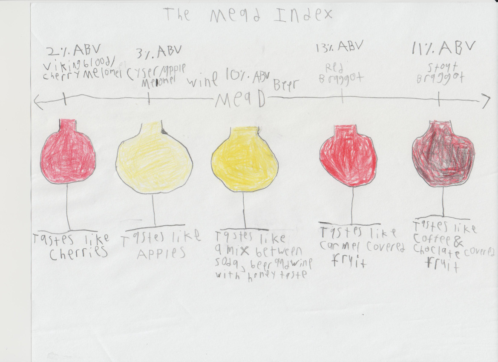

Meads
This page is under the GNU GPL v3.0 and everything on this page that the GNU GPL v3.0 does not cover is under this license: This work is licensed under Attribution-ShareAlike 4.0 International.
Link to main page and repository
, Red Braggot-13% ABV-reddish orange color-tastes like carmel covered fruit, Stout Braggot-11% ABV-blackish red color-tastes like coffee and choclate and covered fruit" width="600" height="400">
warning: all these tastes came from the non alcoholic versions of the drinks and this is only one dimension of the mead index, does not cover all dimesions of the mead index and these drinks are very controversial as in some people like one or some of the drinks but not the others and some people do not exactly like them at all.
Recipes
F.Y.I. and warnings: The recipes shown here can be distributed in any way shape or form to anyone in the U.S. if the drinks are boiled for 3 hours which removes the alcohol, sources: https://www.isu.edu/news/2019-fall/no-worries-the-alcohol-burns-off-during-cookingbut-does-it-really.html and I have tested this for myself and I could not taste a single drop of alcohol after this process and I am sensitive to alcohol, and because well I do not know how to word this but these drinks are considered nonalcoholic if you boil the drinks for 3 hours under the Federal Alcohol Administration Act, source: https://uscode.house.gov/view.xhtml?path=/prelim@title27/chapter8&edition=prelim, I am not a lawyer and this is not legal advice, states and municipalities can have their own laws on what alcohol is in the U.S. so I do recommend talking to an alcohol lawyer if you the person reading this wants to distribute it in a very specific state or municipality in the U.S. or anywhere in the U.S. and I cannot give you any info about alcohol laws in other countries, The recipes are dog safe. Make sure that everything that touches your drinks or ingredients of drinks and tools are cleaned and sanitized. For anything that happens in mead making process or mead distribution process I am not responsible so MAKE AND DISTRIBUTE MEAD AT YOUR OWN RISK.
Mead
- 2.7 lbs raw honey
- 1 gallon of water
- 1 gram of lalvin d47 wine yeast
- 2 tablespoons of honey for carbonization and only needed after fermentation is done
- 1 cup of water and only needed after fermentation is done
- Pour honey and water, preferably hot water in the fermentation vessel
- Stir honey and water until honey is incorporated in water
- Add yeast
- Shake fermentation vessel
- Wait 4 weeks to ferment
- Boil water with 2 tablespoons of honey in a pot until honey is fully incorporated and that is your carbonization medium
- Pour contents of fermentation vessel into the pot of carbonization medium
- Boil drink in pot in the oven preheated to 173.1 degrees F/78.37 degrees C for three hours, do not skip this step
- Bottle and wait for four weeks to let it carbonate, after that it is done
Cyser/Apple Melomel
- 0.76 lbs of raw honey
- 1.39 apples
- 1 gallon of water
- 1 gram of lalvin d47 wine yeast
- 2 tablespoons of honey for carbonization and only needed after fermentation is done
- 1 cup of water and only needed after fermentation is done
- Core and slice your apples
- Pour honey and apples in fermentation vessel
- Pour water in with honey and apples and stir until honey is incorporated into water, I recommend using hot water to stir easily
- Add yeast
- Shake fermentation vessel
- Wait 4 weeks to ferment
- Boil water with 2 tablespoons of honey in a pot until honey is fully incorporated and that is your carbonization medium
- Pour contents of fermentation vessel into the pot of carbonization medium
- Boil drink in pot in the oven preheated to 173.1 degrees F/78.37 degrees C for three hours, do not skip this step
- Bottle and wait for four weeks to let it carbonate, after that it is done
Red Braggot
- 3.175 lbs of raw honey
- 0.4 oz 550 degrees L roasted barley
- 1g of ale yeast
- 2 tablespoons of honey for carbonization and only needed after fermentation is done
- 1 cup of water and only needed after fermentation is done
- Add gallon of water to pot and boil on high
- Wait until water reaches 155 degrees F/68 degrees C
- Steep roasted barley in cheesecloth in the water
- Remove and discard barley immediately and now you have your wort
- Add the honey and stir until fully incorporated into wort
- Boil on medium high for one hour while watching wort to make sure no boil over happens
- Put your wort into a tub or sink of ice
- Wait until it reaches 75 degrees F/23 degrees C
- Fill fermentation vessel with wort until it hits a gallon and if you do not have a gallon poured in, you can always add water
- Add yeast
- Shake fermentation vessel
- Wait two weeks to ferment
- Boil water with 2 tablespoons of honey in a pot until honey is fully incorperated and that is your carbonization medium
- Pour contents of fermentation vessel into the pot of carbonization medium
- Boil drink in pot in the oven preheated to 173.1 degrees F/78.37 degrees C for three hours, do not skip this step
- Bottle and wait for two weeks to let it carbonate, after that it is done
Viking Blood/Cherry Melomel
- 1.59 lbs of raw honey
- 1.44 lbs of cherries
- 1 gallon of water
- 1 gram of lalvin d47 wine yeast
- 2 tablespoons of honey for carbonization and only needed after fermentation is done
- 1 cup of water and only needed after fermentation is done
- If using fresh cherries you must depit and destem the cherries first
- Pour honey and cherries into fermentation vessel
- Stir the cherries into the honey until cherries are incorporated into honey
- Pour water in fermentation vessel, recommend hot water
- Stir water into the honey cherry mixture until honey is incorporated into water
- Add yeast
- Shake fermentation vessel
- Wait four weeks to ferment
- Boil water with 2 tablespoons of honey in a pot until honey is fully incorperated and that is your carbonization medium
- Pour contents of fermentation vessel into the pot of carbonization medium
- Boil drink in pot in the oven preheated to 173.1 degrees F/78.37 degrees C for three hours, do not skip this step
- Bottle and wait for four weeks to let it carbonate, after that it is done
Stout Braggot
- 0.9 lbs of raw honey
- 0.4 lbs of flaked barley
- 0.3 lbs 550 degrees L roasted barley
- 2 tablespoons of honey for carbonization and only needed after fermentation is done
- 1 cup of water and only needed after fermentation is done
- Add gallon of water to pot and boil on high
- Wait until water reaches 155 degrees F/68 degrees C
- Steep roasted barley in cheesecloth in the water
- Remove and discard barley immediately and now you have your wort
- Add the honey and stir until fully incorporated into wort
- Boil on medium high for one hour while watching wort to make sure no boil over happens
- Put your wort into a tub or sink of ice
- Wait until it reaches 75 degrees F/23 degrees C
- Fill fermentation vessel with wort until it hits a gallon and if you do not have a gallon poured in, you can always add water
- Add yeast
- Shake fermentation vessel
- Wait two weeks to ferment
- Boil water with 2 tablespoons of honey in a pot until honey is fully incorperated and that is your carbonization medium
- Pour contents of fermentation vessel into the pot of carbonization medium
- Boil drink in pot in the oven preheated to 173.1 degrees F/78.37 degrees C for three hours, do not skip this step
- Bottle and wait for two weeks to let it carbonate, after that it is done